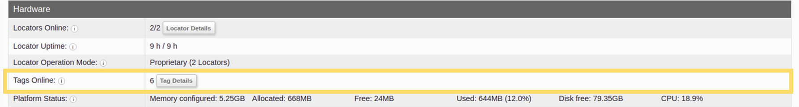
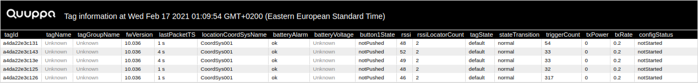

Tag Details Table
Tags are another key component of the Quuppa system, transmitting radio signals containing both Direction Finding and data packets to the Locators, that then pass them along to the Quuppa Positioning Engine for processing into positioning estimates. The Tag Details table is where you will find more detailed information about the performance of individual tags so that you can assess the health of your Quuppa system and troubleshoot any tag related issues you may be facing.
This section will show you how to access and use the Tag Details table.
Using the Tag Details Table
To get to the Tag Details table:
- Open the QPE Web Console's main view (e.g. at http://localhost:8080/qpe/).
- In the Hardware section, find the Tags
Online row and click on the Tag Details
button.

- The Tag Details table will open. Use the available information to check
if all of the tags are working as they should and whether any adjustments to the
project settings are needed to optimise performance. For more about what the
different column mean, please see the Tag
Details Table Definitions section.

Tip: You can change what data is shown and how it is displayed in the table by using the following tips:- To filter the data into ascending or descending order, click on the column heading. A small blue arrow will appear to indicate whether ascending or descending filtering has been applied.
- To filter data by string, use the search bar available at the bottom of the page.
- To hide or show specific columns in the table, click on the Hide/show fields button at the bottom of the page.
- To change the poll interval for the data, i.e. how often the data is updated, edit the Poll interval(sec) value at the bottom of the page.
- To show the timestamps for data in the table, check the Show timestamps checkbox.